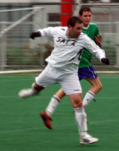

OLD STORIES - MAY 2006 |
||||||
Prelude to a Final?Big Circus, Sunday 28th May. Having defeated both Sala FC and defending Champions BFC last week in the KUIS 7's tournament in Makuhari, France FC continued on their 'roll' by beating Swiss kickers in the latters final league match. Whether this will have any bearing on the FJ Cup final being played by the 2 teams on June 10th at Saitama Stadium is another matter but it will certainly give 2 time winners Swiss, cause for concern. This season sees Swiss finishing outside of the top 2 in the league for the first time in many years and with many of their players nearing their 'past due' date, it could be a dark omen for them. more from Swiss... Hibernian Finish in Style.
Hachioji Park, Saturday 27th May. Despite what the conspiracy theorists may hypothesise it is pace, skill and agility that has seen the Hibs have the wood of Sala in recent years. The Hibs front 2, wide midfielders and attacking midfielders are not afraid to pour forward in numbers and Sala’s big men at the back seem to have trouble keeping up. The same big men are so effective against the larger more bullocking style forwards. The Hibs 2005/6 style of attacking football has seen us average just under 4 goals a game and has been great fun to be involved with. Most teams in the league will have seen the Hibs ‘click’ and score 4 or 5 goals in a 10 - 20 minute period when we are very difficult to defend against. more ... TARTAN ARMY CONQUER JAPAN
Saitama Stadium, Sunday 14th May. Walking a well-trodden line between merriment and uproar the Scotland supporters club, better known as the ‘Tartan Army’, will depart Japan happy men, albeit it happy men in skirts. Playing for Pride!Big Circus, Sunday 14th May. The Swiss and the Knights traveled to the Atsugi Big Circus (why is it called that?) for the late fixture on Sunday in one of the few remaining games of this season’s league. With the Hibs. already having claimed the trophy and the Knights already demoted, it was mostly for pride that both teams had gone 60 kilometers out of Tokyo to this patch amidst the onsens. Well, considering the prizes at stake in the TML championship, it is for pride every weekend. more ... The Road is Long, With Many a Winding Turn
|
|  |
|
Brian Gallagher, who got the only goal of the match, showed good form on the day. |
Hachioji Park, Sunday 7th May. The story, it is said, is in the telling. So you can probably write this one off as five minutes of your life wasted. How to put into words a thoroughly unemotional, unremarkable and quite damp game of football…?
Gallagher showed up wearing questionable beads (“They’re nuts!”) of Hawaiian origin, Shigeru decided he couldn’t be bothered playing, and Toby chose the worst day of the season (weather wise) to come and watch.
Shogun Knights (nee Nova FC) have had quite a time of it of late, losing 8-1 to a merciless BFC and only narrowly losing to champions Hibs. Their squad features a couple of ex-Sala henchmen and games between the two generally lack the bite of certain other fixtures on the TML calendar. Sala were not in the mood to totally extend the hand of friendship however. Olive branches left in the locker room, Sala took to the field with a very unusual line up, knowing that the Swiss are still there to be overhauled, should they slip up. more ...
RC.
OiFuto, Friday 5th May. The packed crowd of 28 there to witness the TML inauguration of the excellent new long blade astro field at Oi Futo No. 2. were treated to a pulsating fixture that featured end to end action of exciting, intense football of high quality. In previous seasons the Hibs and YCAC had a reputation for being bruising small pitch specialists; but this season they have developed into the 2 most entertaining teams in the TML; eschewing the long ball game and building attacks from the back and able to hold possession for long periods. With the league decided this was crucial to YCAC’s chance to clinch 2nd place and for both teams to claim boasting rights. more ...
BC.